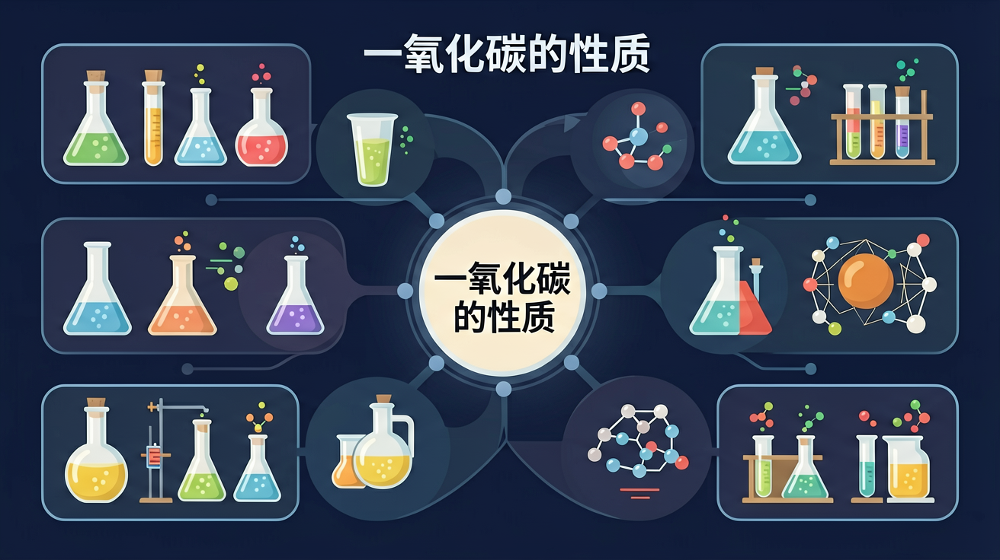
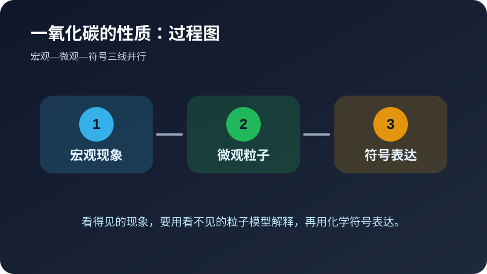

🎯 学习目标
- 能用自己的话解释一氧化碳的性质的核心含义
- 能把一氧化碳的性质和实验现象、微观粒子或化学符号联系起来
- 能识别一氧化碳的性质相关的常见错误并完成迁移题
Problem Anchor
今天先解决一氧化碳的性质里的哪个问题？
选择后，AI 学伴会围绕你的卡点给提示。
🧭 带着问题学
❓ 为什么煤气中毒时人会头晕？
❓ 一氧化碳和二氧化碳都是‘碳的氧化物’，为啥一个有毒一个无毒？
❓ 冬天烧煤取暖时，怎么判断有没有一氧化碳泄漏？
学完这一课，这些问题你都能自信地回答。
📝 前测：你已经知道什么？
下面哪种学习方式最符合化学学科特点？
错因诊断会出现在这里。
🔍 核心讲解：一氧化碳的性质 的专属解释
现象
一氧化碳无色无味，却能使人中毒，并能还原金属氧化物。
机制
一氧化碳具有可燃性、还原性和毒性，能与血红蛋白结合影响输氧。
证据
证据来自还原氧化铜实验、燃烧产物和中毒机理。
深层理解：看见它是具体实验现象；拆开它要看 一氧化碳浓度、通风条件、还原温度和氧气供应；解释它要说明为什么；比较它要避开易错点；迁移它要换到新情境。
🧩 过程图：从现象到解释

看见现象只是第一步。真正的化学解释，需要把“颜色、气体、沉淀、温度”等宏观线索，转译成“粒子种类、粒子数目、粒子间作用或重新组合”等微观语言，最后再落到符号表达。
🎛️ Canvas 真实互动：微观解释模拟器
拖动滑块，观察 一氧化碳浓度、通风条件、还原温度和氧气供应 如何影响结果。
🧭 诊断实验室：判断解释是否合格
请用三条标准评价自己的答案：第一，是否说清了观察到的现象，而不是只写结论；第二，是否把现象背后的微观粒子、物质类别或反应规律讲出来；第三，是否能用符号、关键词或简图表达。若三条里少任何一条，说明对一氧化碳的性质的理解还不够稳。
教师可以让学生两两互评：一人读解释，另一人只问“你看到的证据是什么”“微观层面发生了什么”“如果换个条件还成立吗”。这三个追问能快速暴露死记硬背的问题，也能把课堂讨论从答案对错推进到证据和推理。